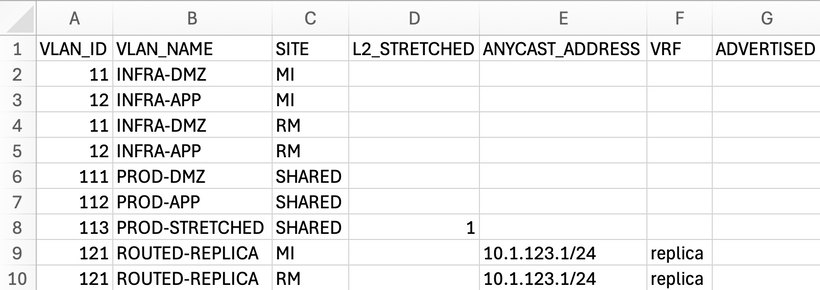
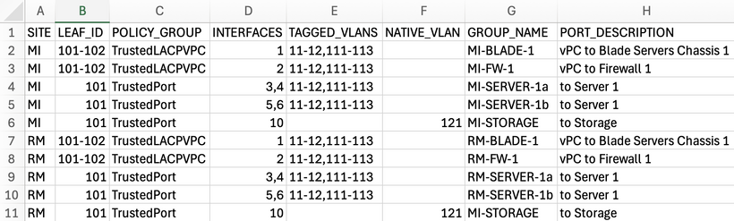

A practical Cisco NDO multi-site use case modelling¶

The example presented here covers the deployment of a multi-site fabric managed through NDO. The current setup, based on a legacy environment, must be migrated to a newly implemented multi-site environment. Although this is not a greenfield project, we can treat it as such since the entire configuration will be generated from scratch.
The automation project requirements are to:
- Distribute the production workload across all sites
- Ensure fast deployment
- Provide simple tools for the operations team
In the current infrastructure, most of the L3 routing is handled by firewalls. Some basic L3 routing scenarios within the fabric may be implemented in the future.
Unfortunately, there is no single “correct” approach that guarantees results. Furthermore, what works today may require changes tomorrow, as NDO, the Terraform NDO provider, and NaC are constantly evolving.
In this case, I chose to:
- Focus on the production tenant, managing fabric setup and inter-site communication manually
- Prefer tools in the order: NaC, Terraform, Python
- Store automation code and data structures in Git
- Manage configuration on NDO, configuring only unsupported features directly on APIC
- Use NaC data structures for objects that rarely require modification
- Use a simple CSV-based structure for operations requiring frequent updates (networks, L3Outs)
- Create a parser to convert CSV files into NaC and Terraform data structures
NDO¶
All logical configuration, i.e., related to templates, is managed by NDO, with a few exceptions described later. The physical configuration, however, is managed directly on the APIC for two reasons:
- There is currently no complete NaC or Terraform module for managing the physical layer.
- The Terraform provider for NDO has poor performance, so it’s more efficient to perform non-critical tasks directly on the APIC.
NDO therefore contains:
- The production tenant, applied across all sites
- A schema template
The schema contains six tenant templates:
- One template per site containing BDs, subnets, Applications, and EPGs (deploy order 2)
- One shared template for all sites containing BDs, Applications, and EPGs (deploy order 2)
- One shared template for all sites containing VRFs (deploy order 1)
- One shared template for all sites containing Contracts (deploy order 1)
- One shared template for all sites containing External EPGs (deploy order 3)
Operational activity will typically be limited to templates containing BDs, Applications, and EPGs. The others will remain mostly static.
The Terraform provider for NDO does not support tenant-level policies (e.g., IGMP snooping policies). If such policies are required, they must be configured directly on the APIC.
APIC¶
All configuration not managed by NDO, particularly physical configuration is managed directly on the APIC. Specifically, the APIC manages:
- Access policies (AAEPs, interface policies, leaf interface policy groups, physical domains, VLAN pools)
- Physical topology (interfaces, vPCs)
- Physical association with EPGs
Each site will also have its own dedicated Terraform environment, ensuring visibility into changes and their impact on the infrastructure.
NaC and Terraform¶
In this project, NaC manages nearly the entire configuration. The only exception is for vPC explicit protection groups, which are handled via Terraform.
While Terraform may initially seem complex, it provides significant advantages when used with Cisco ACI: object creation and deletion are performed safely and automatically.
Modelling¶
Infrastructure construction occurs at multiple levels, NDO, APIC, NaC, and Terraform. Practically, this requires building a relatively complex data structure that includes some duplicated information.
For example, when creating an EPG, it must be associated with both a BD and the relevant physical interfaces. On NDO, we define BDs, Applications, and EPGs; on APIC, we associate the EPG with physical interfaces.
Validating the data structure to prevent human errors can be challenging.
Modelling should never be influenced by the technical solution, it must be defined according to the architecture and operational requirements.
In this case, I chose to work with:
- CSV files containing networks and interfaces
- YAML files for NaC containing static, non-duplicated information
I developed a parser that:
- Validates the CSV data structure
- Performs integrity checks (e.g., VLAN usage depends on the definition of its associated network)
- Safely generates NaC and Terraform structures for NDO and APIC
Adding or removing objects simply requires editing CSV files, which are designed to be human-readable. The rest is handled safely by Terraform.
Parser¶
The core of the automation is a custom parser that converts CSV-based data structures into NaC and Terraform formats.
The parser enables a user interface that transforms input files (CSV) into the structures required by NaC and Terraform.
It also validates and normalizes CSV input, performing multiple integrity checks.
The parser can be easily integrated into a CI/CD pipeline: the user only needs to update a CSV file. After committing, the configuration deployment is automatically managed during a maintenance window.
This approach also allows parser modifications with full safety: if the generated data structure remains unchanged, no errors were introduced. Similarly, the CSV structure can evolve, for example, integrating with an IPAM.
CSV¶
In this scenario, input data is managed using two main CSV files.
Network CSV:

IT teams are typically accustomed to thinking of networks in terms of VLANs. VLAN tags are also critical when connecting ACI with environments that don’t natively support VXLAN. Furthermore, all objects must have unique names to avoid overlap with shadow objects created on other sites.
Each network can include a subnet and may be L2 stretched. If the VRF is not defined, a default one is used. The application name is derived from the site and VRF name, since this migration project follows a network-centric model from legacy to ACI.
This CSV file generates:
- VRFs (e.g., replica_VRF or default_VRF)
- Applications (e.g., MI-storage_replica_App or MI-default_App)
- Bridge Domains (e.g., MI-0011-INFRA-DMZ_BD)
- EPGs (e.g., MI-0011-INFRA-DMZ_EPG)
Objects are created on NDO (VRF, Application, Bridge Domain, Subnets, Endpoint Groups). They are deployed on the shared template if SITE=SHARED, or on the site-specific template otherwise.
Using this model, we immediately identify a critical issue: if a site-local network (non-L2 stretched) later needs to become L2 stretched, we must set SITE=SHARED. In practice, this destroys and recreates the object with a new name, requiring all associated interfaces to be re-bound, significantly impacting the infrastructure.
However, the client requirement is to make a network L2 stretched without disruption. To achieve this, only objects that will never need to be stretched should be defined as site-local. All others that may potentially be stretched should be defined with SITE=SHARED.
Interface CSV:

Each interface group specifies the site, the corresponding leaf, policy group, configured interfaces, tagged VLANs, and native VLAN.
A unique GROUP_NAME must be defined, it is used to build related objects and cannot be changed later. PORT_DESCRIPTION can be modified freely and defaults to the same value as GROUP_NAME.
For individual interfaces, POLICY_GROUP references one of the predefined policy groups, created via a dedicated NaC file.
This CSV file generates:
- Selectors (e.g.,
MI-SERVER-1A_Sel) associated with leaf interface profiles (e.g.,TrustedPort_PolGrp) - Port blocks (e.g.,
Block3) associated with selectors and their descriptions (e.g.,to Server 1)
For vPC-configured interfaces, POLICY_GROUP references a policy template used during vPC policy group creation.
For vPCs, this CSV file generates:
- vPC-type policy groups (e.g.,
MI-BLADE-1_PolGrp) - Selectors (e.g.,
MI-BLADE-1_Sel) associated with policy groups and leaf interface profiles - Port blocks (e.g.,
Block1) linked to selectors with descriptions (e.g.,vPC to Blade Servers Chassis 1)
Finally, the file creates static EPG-to-port/vPC associations for each VLAN.
CSV files are available in the GitHub repository.